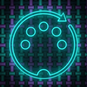

MidiLoom Support
Visual MIDI routing and processing for iPad
MidiLoom is a visual MIDI processor for iPad. You build a graph of nodes on a canvas to route, filter, transform and generate MIDI between your USB and Bluetooth devices, other apps and its built-in sounds, in real time.
Getting started
- Open the menu and choose an example graph. Controls Playground, Drum Beat and Play a MIDI File work with no hardware at all, using the on-screen controls and the built-in Synth.
- Press play. If a MIDI Input or MIDI Output node has no device chosen yet, MidiLoom asks for one.
- Tap a node to change its settings; drag from a port to another node to connect them. Every node has its own page in the built-in Help.
- Save your graph from the menu. Recently opened graphs are one tap away in the System panel.
MIDI devices
Class-compliant USB MIDI devices appear as soon as they are plugged in. Bluetooth MIDI devices are paired from the device manager with Connect Bluetooth MIDI. MidiLoom can also send to and receive from other MIDI apps through its virtual ports.
Files
MIDI files and recordings live in MidiLoom's folder in the Files app (On My iPad › MidiLoom). Copy a .mid file there to play it with a MIDI File Player node; takes from Record nodes are saved under recordings.
Contact
Email smythe.jared@gmail.com with the iPad model, iPadOS version, and the MIDI devices you use. If a graph misbehaves, attaching it helps.